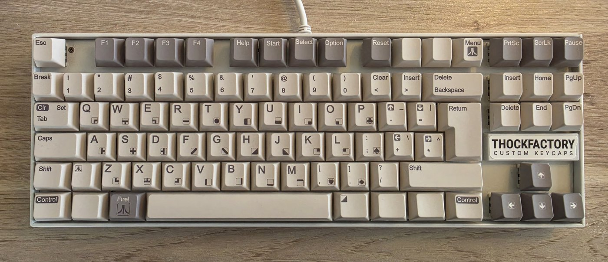

9. Teclado
Un teclado USB estándar se convierte en el teclado del Atari: cada tecla está donde está la tecla correspondiente del Atari, y un puñado de teclas del PC hacen las veces de las teclas de función, de consola y Break del Atari.
Cómo llega el teclado a la máquina
La placa no tiene un host USB propio. Tu teclado USB se conecta a un pequeño adaptador —un módulo host USB CH9350 o una Raspberry Pi Pico— que envía los reportes crudos del teclado como tramas seriales CH9350 (115200 baudios, 8N1) por una sola línea de datos al pin 53; el módulo toma los 5 V y GND del mismo conector, así que son tres cables en total. Las tramas se decodifican por hardware dentro de la FPGA. El cableado y la configuración del adaptador están en Instalación del hardware. El teclado es opcional para explorar y montar discos: un joystick en el puerto 1 puede manejar todo el menú OSD por sí solo.
Filosofía del mapeo: tu teclado es un teclado Atari
El teclado del PC se mapea al teclado del Atari por posición, no por las leyendas impresas en las teclas. Cada tecla física hace lo que hace la tecla que ocupa el mismo lugar en un teclado Atari XL real. Las letras, los dígitos, las cuatro filas de teclas y los modificadores coinciden, así que escribir al tacto se siente como en la máquina real. La diferencia se nota en los símbolos: el Atari ubica sus símbolos con Shift y sus teclas de puntuación en lugares distintos a los de un PC, y aquí están donde los tiene el Atari.
Algunas consecuencias que conviene conocer:
- Shift+2 escribe comillas dobles
"(el Shift-2 del Atari), no@. - Shift+8 escribe
@(el Shift-8 del Atari), no*. - Shift+7 escribe un apóstrofo
'y Shift+6 escribe&. - Las dos teclas a la derecha del 0 (- y = del PC) son las teclas < (Clear) y > (Insert) del Atari.
- Las dos teclas a la derecha de la P ([ y ] del PC) son las teclas − y = del Atari: las teclas de cursor arriba y cursor abajo cuando se mantienen junto con Ctrl.
- Las dos teclas a la derecha de L y ; (' y \ del PC) son las teclas + y * del Atari: cursor izquierda y cursor derecha con Ctrl. En un teclado ISO, la tecla #/~ junto a Enter es la tecla *.
- Los corchetes se escriben a la manera Atari: Shift+, da
[y Shift+. da]. Los dos puntos son Shift+;.
Opción de distribución PC (v3.1)
Si prefieres que las teclas escriban lo que tienen impreso, pon Options → Keyboard (Opciones → Teclado) en PC (ver Opciones). El mapeo sigue entonces un teclado PC US-ANSI: letras, dígitos y la mayor parte de la puntuación no cambian, y los símbolos que en el Atari viven bajo un estado de Shift distinto se traducen por ti, estado de Shift incluido.
| Pulsas | En modo ATARI escribe | En modo PC escribe |
|---|---|---|
| Shift+2 | " | @ |
| Shift+6 / Shift+7 / Shift+8 | & / ' / @ | ^ / & / * |
| - y Shift+- | < y Clear | - y _ |
| = y Shift+= | > e Insert | = y + |
| [ / ] | Teclas - / = del Atari | [ / ] |
| \ y Shift+\ | Tecla * del Atari | \ y | |
| ' y Shift+' | Tecla + del Atari | ' y " |
| Shift+, / Shift+. | [ / ] | < / > |
- Las teclas de flecha reales siguen moviendo el cursor en ambos modos. En modo PC, las teclas [ ] \ ' escriben sus símbolos en lugar de actuar como las teclas de cursor del Atari.
{,},~y`no tienen carácter Atari; la tecla de acento grave sigue siendo Break en ambos modos.- Las combinaciones con Control (caracteres gráficos) siguen siendo posicionales en ambos modos; F1–F12, las teclas de consola y las teclas del OSD son idénticas en ambos modos.
- El símbolo de una tecla se decide en el momento en que se presiona, así que pulsar Shift después de una tecla que ya está sostenida no cambia lo que esa tecla escribe. Si dos teclas sostenidas necesitan estados de Shift opuestos, gana la que necesita Shift.
- La opción corresponde a una distribución US; un teclado físico que no sea US obtiene el resultado simbólico US. Se guarda con
kbdlayout=enatari.ini, y el pegado por PC Link la sigue automáticamente.
Tabla de mapeo de teclas
| Tecla del PC | Tecla / función del Atari |
|---|---|
| A–Z | A–Z |
| 0–9 | 0–9 |
| Enter | Return |
| Escape | Escape |
| Backspace | Delete / Back Space |
| Tab | Tab |
| Space | Space (barra espaciadora) |
| - (a la derecha del 0) | < (Clear) |
| = | > (Insert) |
| [ | Tecla − (cursor arriba con Ctrl) |
| ] | Tecla = (cursor abajo con Ctrl) |
| ' | Tecla + (cursor izquierda con Ctrl) |
| \ (ANSI) o #/~ ISO (junto al Enter ISO) | Tecla * (cursor derecha con Ctrl) |
| ; , . / | ; , . / (mismas posiciones en el Atari) |
| ↑ ↓ ← → | Teclas de cursor del Atari: mueven el cursor directamente, Ctrl va implícito |
| F1–F4 | F1–F4 del Atari |
| F5 o Insert | Help |
| F6 | Start (tecla de consola) |
| F7 | Select (tecla de consola) |
| F8 | Option (tecla de consola) |
| ` (acento grave/tilde) o Num Lock | Break |
| Shift izquierdo / derecho | Shift |
| Ctrl izquierdo / derecho | Control |
| Alt derecho | Inverse Video (la tecla con el logo de Atari) |
| Caps Lock | Caps Lock |
| F9 | Soft Reset (reinicio en caliente; tecla rápida durante el juego) |
| F11 | Alternar en vivo flechas ↔ joystick (ver más abajo) |
| F12 | Abrir / cerrar el menú OSD |
Las teclas que no aparecen aquí (por ejemplo F10, Home, Page Up y el teclado numérico) se ignoran. Se pueden mantener presionadas hasta cuatro teclas a la vez.
Teclas especiales
- Las teclas de función F1–F4 del Atari están en F1–F4.
- Help está en F5 y también en Insert.
- Teclas de consola: F6 = Start, F7 = Select, F8 = Option. Mantén presionada F8 durante un arranque cuando en una máquina real mantendrías Option.
- Break está en la tecla de acento grave/tilde ` (arriba a la izquierda, debajo de Escape) y en Num Lock.
- Inverse Video está en Alt derecho.
- Caps Lock es la tecla Caps del Atari.
- Movimiento del cursor: las teclas de flecha mueven el cursor directamente; en un Atari real las teclas de cursor son las teclas − = + * mantenidas junto con Control, y las flechas aportan ese Control por ti. Mantener además un Ctrl real no cambia nada. Las teclas [ ] ' \ llegan a las mismas teclas del Atari pero escriben el símbolo a secas; agrega Ctrl para mover el cursor con ellas.
- Teclas rápidas que nunca llegan al Atari: F9 reinicio en caliente (Soft Reset), F11 alternar flechas/joystick, F12 menú OSD. Ver El menú OSD para saber qué hace Soft Reset con un cartucho adjunto.
Teclas de flecha como joystick
Para juegos que necesitan un joystick cuando solo tienes teclado, las teclas de flecha pueden manejar el Joystick 1. En el OSD elige Options y cambia Arrow keys (teclas de flecha) de NORMAL a JOYSTICK (ver Opciones y atari.ini). Mientras JOYSTICK esté seleccionado:
- ↑ ↓ ← → mueven la palanca del puerto 1, junto con cualquier joystick físico cableado al puerto 1;
- Alt izquierdo es el botón de disparo;
- las teclas de flecha se suprimen del teclado Atari, así que solo mueven la palanca y nunca escriben movimientos de cursor indeseados;
- todo lo demás en el teclado sigue funcionando con normalidad.
Vuelve a ponerlo en NORMAL para usar de nuevo las flechas como teclas de cursor. La opción se escribe en atari.ini con Save changes (guardar cambios) (clave joystick=, 0 = NORMAL, 1 = JOYSTICK; por defecto 0) y sobrevive a los reinicios.
atari.ini.Teclado con la leyenda Atari
